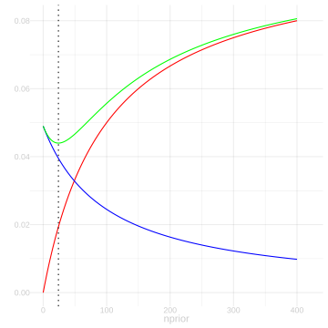
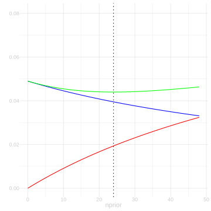
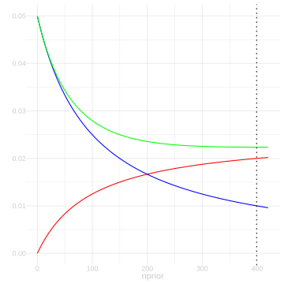

22 Homework: Comparing Estimators
Download this assignment — unzip it, open homework-comparing-estimators.qmd in Positron, and answer inside the answer blocks.
$$ \newcommand{X}{} \newcommand{Y}{}
$$
\[ \DeclareMathOperator{\RMSE}{RMSE} \DeclareMathOperator{\mathop{\mathrm{E}}}{E} \DeclareMathOperator{\mathop{\mathrm{\mathop{\mathrm{V}}}}}{V} \DeclareMathOperator{\mathop{\mathrm{sd}}}{sd} \DeclareMathOperator{\mathop{\mathrm{\widehat{V}}}}{\widehat{V}} \DeclareMathOperator{\mathop{\mathrm{bias}}}{bias} \newcommand{\thetaprior}{\theta^{\text{prior}}} \newcommand{\nprior}{n^{\text{prior}}} \newcommand{\yprior}{y^{\text{prior}}} \]
Introduction
Summary
This homework continues where the last one left off. You’ve now seen that biased estimators can mess up coverage, and you’ve learned exactly how: coverage depends on the ratio bias/se. Now we’ll dig into the tradeoffs involved in choosing an estimator.
We’ll start with the bias/variance tradeoff. An estimator can be bad in multiple ways: too much bias, too much variance, or both. We’ll use root-mean-squared error to summarize overall accuracy.1
Then we’ll talk about consistency—the one property that almost everyone agrees they want an estimator to have. It’s really the bare minimum: if you’re willing to collect enough data, you can get as close to the estimation target as you want. We’ll see which of our prior-based estimators are consistent and which aren’t.
We’ll also finish a calculation from Lecture 5: the variance of a sample proportion when sampling without replacement.
Finally, we’ll look at a conservative approach to interval calibration using Markov’s inequality. This gives intervals that are guaranteed to have at least 95% coverage, even if we’re wrong about the sampling distribution being normal.
The Point
Knowing this stuff will help you choose between estimators yourself, think about the choices others make, and communicate about these decisions and their implications. It’ll help us think about calibration later on, too, because when we know our point estimators are close to the estimation target, we can get away with using approximations like Taylor series to understand their sampling distributions.
Variance when Sampling Without Replacement
In Lecture 3, we talked about the distribution of a sample proportion when we sample without replacement. This is, admittedly, a long read. But one thing we can take away from it—and I’ll just tell here rather than asking you to work it out — is the probability distribution of \(Y_1\) when we make a single call and the joint distribution of \(Y_1, Y_2\) when we make two calls. Those are just special cases of the ‘Partially Marginalized’ distribution described in Lecture 3. Letting \(m_0\) and \(m_1\) be the number of zeros and ones in our binary population \(y_1 \ldots y_m\), these are the distributions.
| \(p\) | \(Y_1\) |
|---|---|
| \(\frac{m_0}{m}\) | 0 |
| \(\frac{m_1}{m}\) | 1 |
| \(p\) | \(Y_1\) | \(Y_2\) |
|---|---|---|
| \(\frac{m_0(m_0-1)}{m(m-1)}\) | 0 | 0 |
| \(\frac{m_0m_1}{m(m-1)}\) | 0 | 1 |
| \(\frac{m_0m_1}{m(m-1)}\) | 1 | 0 |
| \(\frac{m_1(m_1-1)}{m(m-1)}\) | 1 | 1 |
You can go ahead and cross out the \(Y_1\) in the first table and write in \(Y_i\), because this is the marginal distribution of every individual observation \(Y_i\) when we draw a sample without replacement of any size \(n\). You can cross out \(Y_1\) and \(Y_2\) in the second table and write in \(Y_i\) and \(Y_j\) for the same reason: it’s the joint distribution of any pair \((Y_i, Y_j)\) for \(i\neq j\) when we draw a sample without replacement of any size \(n\). This makes them a lot more useful.
To justify this, we can do a simple two-step thought experiment. We’ll think of drawing a sample without replacement as the process of shuffling a deck of cards labeled 1 … m, then drawing the first \(n\) cards off the top. Letting \(J_1\) be what the first card says, \(J_2\) what the second one says, and so on, our sample \(Y_1 \ldots Y_n\) is \(y_{J_1} \ldots y_{J_n}\). Here’s our argument.
No matter how many cards we’re going to draw, the distribution of the first card is the same. Same with the first two cards. Thus, what we’ve written above is the marginal distribution of \(Y_1\) and the joint distribution of \((Y_1,Y_2)\) when we make any number of calls \(n\).
If we’d pulled off the first \(n\) cards and then counted from the bottom instead of the top, we’d get the same distribution. They’re shuffled, after all. So the marginal distributions of \(Y_1\) and \(Y_n\) are the same and so are the joint distributions of \((Y_1,Y_2)\) and \((Y_n,Y_{n-1})\). The same thing would be true if we went through our top \(n\) cards in any order. Thus, the marginal distributions of \(Y_i\) are the same for all \(i\) and the joint distributions of \((Y_i,Y_j)\) are the same for all \(i \neq j\).
Now let’s use this to calculate the variance of our sample proportion \(\hat\theta=\frac{1}{n}\sum_{i=1}^{n}Y_i\). Most of the work is already done on this slide from Lecture 5.2 In that calculation, I used the following identity. It’s colored blue there to highlight it.
\[ \mathop{\mathrm{E}}\sb*{ (Y_i - \mathop{\mathrm{E}}[Y_i])(Y_j - \mathop{\mathrm{E}}[Y_j]) } = -\frac{\theta(1-\theta)}{m-1} \qfor i\neq j \]
But I didn’t actually show that it’s true. That’s what we’re going to do now. Let’s start by rewriting this expression so it’s a little easier to work with. Like this.
\[ \mathop{\mathrm{E}}\sb*{ (Y_i - \mathop{\mathrm{E}}[Y_i])(Y_j - \mathop{\mathrm{E}}[Y_j]) } = \mathop{\mathrm{E}}[Y_i Y_j] - \mathop{\mathrm{E}}[Y_i]\mathop{\mathrm{E}}[Y_j] \]
What’s nice about this second form is that using our tables above to calculate these expectations is easy. We actually have a row for \(Y_i\) in our marginal table and can easily add a row to our joint table for \(Y_i Y_j\). I’d like to ask you to calculate the thing, but since it’d probably take a litte arithmetic to manipulate what you get into the form \(-\frac{\theta(1-\theta)}{m-1}\) we used in lecture, I’m going to ask you to verify my calculation instead.
Simplifying this into the form \(-\frac{\theta(1-\theta)}{m-1}\) is a little bit of work. As usual, the trick is to give your two terms a common denominator and see what cancels.
I’ll save you the trouble, but I’ll ‘fold’ it like I usually do solutions, so if you’d like to try it on your own, you can without the solution staring you in the face. If you do just want to read it, expand the box by clicking on it.
Bias, Variance, and Tradeoffs
Review: Prior-Based Estimators
In the last homework, we worked with estimators that incorporate prior information. Recall the general form: if we have \(\nprior\) prior observations with mean \(\thetaprior\), we can combine them with our sample to get \[ \tilde{Y}_{\nprior} = \frac{1}{\nprior + n} \left\{ * \right\}{ \nprior\thetaprior + n\bar Y }. \] You calculated the bias and standard deviation of this estimator: \[ \begin{aligned} \text{bias} &= \frac{\nprior( \thetaprior - \theta)}{\nprior + n} \\ \mathop{\mathrm{sd}}(\tilde Y_{\nprior}) &= \sqrt{\frac{n\theta(1-\theta)}{(\nprior + n)^2}} \end{aligned} \] And you saw, both in the sampling distribution plots and in the coverage simulation, that bias causes problems for interval estimation. The lecture gave us the precise relationship: coverage depends on the ratio bias/se.
Now we’ll dig deeper into the tradeoffs involved in choosing an estimator.
The Bias/Variance Tradeoff
Here’s the figure from last homework showing three estimators at three sample sizes. Recall that estimator ‘a’ is the sample mean (unbiased), estimator ‘b’ uses a fixed number of prior observations (bias shrinks with \(n\)), and estimator ‘c’ scales the prior observations with sample size (constant bias).
As the figure shows, there are multiple ways to be a not-so-great estimator. You can have no bias—or small bias—but so much variance that in many surveys (i.e. many draws from the sampling distribution) you’re way off. That’s what we see happening with ‘estimator a’ at sample size \(n=10\). You can have low variance but comparatively high bias, like we see with ‘estimator c’ at sample sizes \(n=40\) and \(n=160\). We often use root-mean-squared-error to summarize the typical magnitude of an estimator’s error.
\[ \RMSE(\hat\theta) = \sqrt{ \mathop{\mathrm{E}}\sb*{ \left\{ * \right\}{\hat \theta - \theta}^2 } } \]
Famously, we can decompose its square into a sum of squared bias and variance.
\[ \begin{aligned} \mathop{\mathrm{E}}\sb*{ \left\{ * \right\}{\hat\theta - \theta}^2 } &= \mathop{\mathrm{E}}\sb*{ \left\{ * \right\}{ \p*{\hat\theta - \mathop{\mathrm{E}}[\hat\theta]} + \p*{\mathop{\mathrm{E}}[\hat\theta] - \theta} }^2 } \\ &= \mathop{\mathrm{E}}\sb*{ \left\{ * \right\}{ \hat\theta - \mathop{\mathrm{E}}[\hat\theta]}^2 } + 2\mathop{\mathrm{E}}\sb*{ \left\{ * \right\}{ \hat\theta - \mathop{\mathrm{E}}[\hat\theta]} \cdot \left\{ * \right\}{\mathop{\mathrm{E}}[\hat\theta] - \theta} } + \mathop{\mathrm{E}}\sb*{ \left\{ * \right\}{ \mathop{\mathrm{E}}[\hat\theta] - \theta }^2 } \\ &= \mathop{\mathrm{\mathop{\mathrm{V}}}}[\hat\theta] + 2 \times 0 + \underset{\text{bias}(\hat\theta)^2}{\left\{ * \right\}{ \mathop{\mathrm{E}}[\hat\theta] - \theta }^2} \\ \end{aligned} \]
Just to check that you’re following the math, do this quick exercise.
Now here’s a real one. For the first time this semester, we’re talking about different estimators for the same estimation target. This exercise is an opportunity to think about how you might choose between them. I’ve asked you to answer a few questions and sketch a few things to help you think through the issues, but I’ve tried to leave this pretty open-ended because this really is a question without a single right answer. To some extent, it’s about what you think is important. You don’t have to stand by this choice for the rest of your life, so it’s okay if you miss something important and wind up changing your mind later, e.g. when you talk with your classmates or read the solution. It’s really just to get you started thinking about these kinds of choices and what you might want to consider when making them.
SolutionSolution
Let’s recall our formulas for the bias and standard deviation of \(\tilde{Y}_{\nprior}\) and sum their squares to get its mean squared error.
\[ \begin{aligned} \text{bias} &= \frac{\nprior(\thetaprior-\theta)}{\nprior+n} \\ \text{sd} &=\frac{\sqrt{n\theta(1-\theta)}}{\nprior+n} \\ \text{rmse} &= \sqrt{\frac{ (\nprior)^2 (\thetaprior-\theta)^2 + n\theta(1-\theta)}{(\nprior+n)^2}} \end{aligned} \]
The bias of this estimator increases in magnitude as \(\nprior\) grows. In particular, it grows more or less linearly when \(\nprior\) is small relative to \(n\) and level off then slows, taking the value \((\thetaprior-\theta)/2\) for \(\nprior=n\) and converging to \(\thetaprior-\theta\) as \(\nprior\) goes to infinity. The standard deviation of this estimator decreases as \(\nprior\) grows, taking on half the value it has for \(\nprior=0\) when \(\nprior=n\) and converging to zero as \(\nprior\) goes to infinity. The root-mean-squared error of this estimator, decreases then increases as \(\nprior\) grows.
I’m going to give you a long, detailed answer for the rest of this question. I wasn’t expecting anything like it from you, but I thought it might interest you and maybe clarify a few things you might’ve thought about when you approached the question yourself. I’ll start with precise plots of the bias, sd, and rmse curves for \(\thetaprior=.5\) and three values of \(\theta\): \(.6\), \(.55,\) and \(.525\). So that we can compare across different values of \(\theta\), I’ll plot each twice: once on a common set of axes (left) and once with the minimums of \(\text{rmse}\) aligned (right).






One salient feature is the minimum of the rmse curve, which I’ll indicate with a dotted line. We can find it by setting the mean squared error with respect to \(\nprior\) to zero and solving for \(\nprior\). We use the quotient rule \([f(x)/g(x)]' = [f'(x)g(x) - f(x)g'(x)]/g(x)^2\). Since we’re looking for a minimum, we can ignore the denominator. We want \(x=\nprior\) where \(f'(x)g(x) - f(x)g'(x) = 0\) for \(f(x) = x^2 (\thetaprior-\theta)^2 + n\theta(1-\theta)\) and \(g(x) = (x + n)^2\). \[ \begin{aligned} 0 &= f'(x)g(x) - f(x)g'(x) \\ &= 2x(\thetaprior-\theta)^2(x+n)^2 - 2x^2(\thetaprior-\theta)^2(x+n) - 2n\theta(1-\theta)(x+n) \\ &= 2x(\thetaprior-\theta)^2 (x+n)\left\{ * \right\}{(x+n) - x} - 2n\theta(1-\theta)(x+n) \\ \end{aligned} \] which happens, cancelling the common factor of \(2n(x+n)\), for \(x=\theta(1-\theta)/(\thetaprior-\theta)^2\).
Another salient feature is the point where bias and standard deviation are equal, which is indicated by a crossing of the red and blue lines in the plots. We can solve for this as follows. \[ \frac{\nprior(\thetaprior-\theta)}{\nprior+n} = \frac{\sqrt{n\theta(1-\theta)}}{\nprior+n} \qqtext { where } \nprior = \sqrt{n\theta(1-\theta)} / (\thetaprior-\theta) \]
One interesting thing to notice is that, while both of these points shift to the right as \(\thetaprior\) gets closer to \(\theta\), the point where rmse is minimized shifts to the right faster. An implication of this that we can see in the plots is that choosing \(\nprior\) to minimize rmse will result in an estimator with a larger \(\text{bias}/\text{sd}\) ratio when \(\thetaprior\) is close to \(\theta\) than when it is far away. Why does this matter? Because the bigger the ratio of \(\text{bias}/\text{sd}\), the worse our interval estimators’ coverage probability will be. When this ratio is roughly 1.96, we’ll get about 50% coverage. We see that here in the slides when discussing implications of bias. So it tells us that choosing \(\nprior\) to minimize \(\rmse\) is not necessarily a good idea from an inferential perspective. When we do this, poor coverage isn’t a price we pay for choosing \(\thetaprior\) badly—it’s our ‘reward’ for choosing it well. In light of this, I think choosing \(\nprior\) to minimize \(\rmse\) is a bad idea. We could try to do something a bit more complicated like choosing \(\nprior\) to minimize \(\rmse\) subject to a constraint on the bias/sd ratio, e.g., \(\text{bias}/\text{sd} \le 1/2\), to ensure close-to-nominal coverage. But what I’d suggest is simpler: just set \(\nprior=0\) and use the sample mean.
All of this assumes we can actually choose \(\nprior\) to minimize \(\rmse\). It isn’t obvious that we can given that our \(\rmse\) formula involves the unknown population proportion \(\theta\), but you can do something a lot like that by minimizing an estimate of \(\text{rmse}\). People do this often, although typically in more complex estimation problems. The most popular technique for this is probably Cross-Validation, which we’ll talk about later in the semester. Stein’s Unbiased Risk Estimate is an interesting alternative. We won’t get there this semester, but it doesn’t require all that much background to understand, so take a look at the wikipedia page if you’re curious.
Consistency
We say an estimator is consistent if it converges to the estimation target as sample size increases to infinity. That’s being vague. There are a couple ways this is imprecise.
First, what does it mean to be the same estimator at different sample sizes? E.g., the definition of estimator ‘c’ in Figure 25.1 depends on \(n\), so is that ‘an estimator’? The resolution for this one is easy—if we really want to be precise, we explicitly specify an estimator for each sample size: we say ‘an estimator sequence’ is consistent instead of ‘an estimator’. When we say ‘an estimator’ is consistent, we expect the person we’re talking about understands what sequence of estimators we actually mean. This is just a language thing.
The second thing that’s imprecise is what it actually means for a random variable, like an estimator, to converge to something. It turns out that there are a lot of different, useful ways to think about this happening. One of the simpler versions is called convergence in mean square. A sequence of random variables \(Z_1,Z_2,Z_3,\ldots\) converges in mean square to a a random variable \(Z\), which is often but not necessarily a constant, if the root mean square difference between them, \(\sqrt{E[(Z_n - Z)^2]}\), gets arbitrarily small (i.e., converges to zero) as \(n \to \infty\). And we say an estimator \(\hat\theta\) is consistent in mean-square if it converges in mean square to the estimation target \(\theta\) as sample size \(n\) goes to infinity.
Here are a few exercises to get you thinking about what consistency can and can’t look like.
Convergence in Probability
Now let’s think about another notion of convergence. If an estimator’s sampling distribution ends up in the right location (\(\text{bias} \to 0\)) with arbitrarily little spread (\(\text{standard deviation} \to 0\)), then it makes sense that every draw from that sampling distribution will be close to the estimation target. Or almost every draw, anyway.
We tend to visualize our estimate as a single dot, e.g. the black dot below. That’s what it is. One number. But when we want to think about what estimates we could have plausibly gotten, we tend to think about the dots we’d get if we were to repeat our survey a hundred times or a billion, each time calculating an estimate the same way. The sampling distribution of our estimator. We can plot actual dots, like the purple ones below, or histogram them, to get a sense of what this looks like. Hopefully all this is familiar-verging-on-boring to you by now.

Whereas convergence in mean square is about the typical distance between these dots and our estimation target, convergence in probability is about the fraction of these dots that falls within a small distance \(\epsilon\). We say a random variable \(\hat\theta\) converges in probability to \(\theta\) if, for anyone’s idea of ‘sufficiently close’, the probability that \(\hat\theta\) is sufficiently close to \(\theta\) goes to one. \[ P(\lvert\hat\theta - \theta\rvert \le \epsilon) \to 1 \qqtext{ as } n \to \infty \qqtext{ for any } \epsilon > 0 \] Or equivalently, the probability that it isn’t sufficiently close goes to zero. That is, if \[ P(\lvert\hat\theta - \theta\rvert > \epsilon) \to 0 \qqtext{ as } n \to \infty \qqtext{ for any } \epsilon > 0 \]
If \(\hat \theta\) is an estimator and \(\theta\) is our estimation target, we say \(\hat\theta\) is consistent in probability if it converges in probability to \(\theta\).3
I like to say ‘typical distance’ and ‘typical error’ instead of ‘root-mean-squared distance’ and ‘root-mean-squared error’ because it’s shorter, gets the essential idea across, and doesn’t have a technical meaning that might conflict with my use of it this way like ‘average distance’ would.↩︎
Look at the ‘Sampling without Replacement’ tab.↩︎
This is nonstandard terminology. What I’m calling ‘consistency in probability’ is usually called weak consistency for reasons that are a little hard to explain without a fair amount of background in topology and measure-theoretic probability. If you say ‘consistent in probability’, people who usually say weak consistency will know what you mean and maybe even follow your lead, but it may take them a second. ‘Convergence in probability’ is standard terminology, for what it’s worth.↩︎